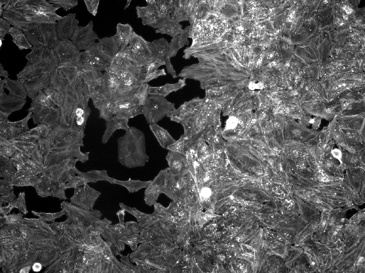
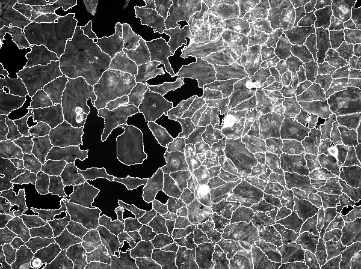
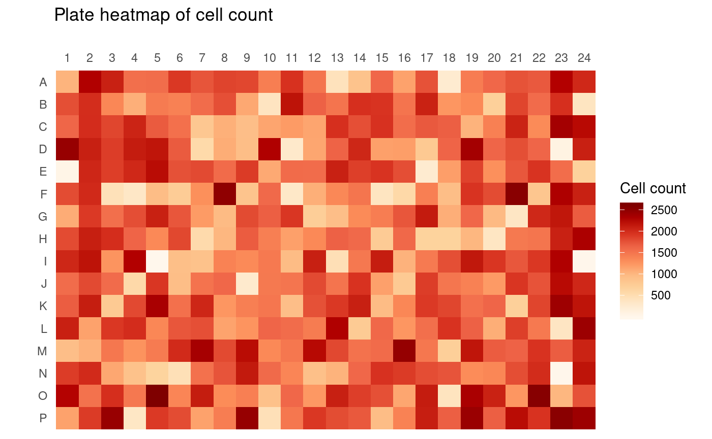

Introduction to infx
Nicolas Bennett
2020-02-21
infx-intro.RmdOpenBIS (Open Biology Information System) is a laboratory information management system designed for robust data management of large-scale experiments in biological sciences. As storage infrastructure it is therefore well suited for the needs of image-based high throughput screening (HTS) as performed by the InfectX consortium. For data access, JSON-RPC services are provided by openBIS, which can be called from the presented client package infx.
This document gives a short introduction to some basic organizational concepts of openBIS with a focus on aspects relevant to HTS and provides some examples of how the infx can be used to access various types of data generated by the InfectX experiments. For more information, general openBIS documentation is available here and documentation specific to the JSON-RPC API can be accessed from here. It might help to have a look at the browser-based web GUI available here alongside this document to help understanding the presented ideas.
Organizational concepts in openBIS
An organizational entity central to the openBIS storage logic is an experiment. In the context of InfectX, an experiment is a single screen, meaning the combination of a compound library and an experimental condition provided by the presence of a pathogen. For example in the experiment ADENO-AU-K1, a kinome-wide siRNA library by Ambion (Silencer Select) was applied in unpooled fashion (3 siRNAs per gene), alongside exposure to the pathogen Adenovirus (cf. the properties field of Experiment objects as shown below).
Experiments are grouped into projects (one per pathogen in the case of InfectX), which in turn are grouped into spaces (an unimportant hierarchical level for InfectX). Projects can be listed using list_projects() and experiments with list_experiments().
token <- login_openbis()
projects <- list_projects(token)
print(projects, length = 10L)
#> ┌─█─Project
#> │ ├─permId = 20130710131815818-2788266
#> │ ├─spaceCode = INFECTX_PUBLISHED
#> │ ├─code = ADENO_TEAM
#> │ ├─description =
#> │ ├─registrationDetails = █─EntityRegistrationDetails
#> │ │ └─...
#> │ └─id = 39
#> ├─█─Project
#> ...
length(projects)
#> [1] 12
adeno_exps <- list_experiments(token, projects[[1L]])
print(adeno_exps, length = 15L)
#> ┌─█─Experiment
#> │ ├─permId = 20111223100933426-318017
#> │ ├─code = ADENO-AU-K1
#> │ ├─identifier = /INFECTX_PUBLISHED/ADENO_TEAM/ADENO-AU-K1
#> │ ├─experimentTypeCode = SIRNA_HCS
#> │ ├─registrationDetails = █─EntityRegistrationDetails
#> │ │ └─...
#> │ ├─properties = [GENESET = Kinome, REPLICATE = 1, LIBRARY = Ambion, DESCRIPT...
#> │ ├─metaprojects =
#> │ ├─stub = FALSE
#> │ └─id = 153
#> ├─█─Experiment
#> │ ├─permId = 20111223134014190-318046
#> │ ├─code = ADENO-AU-K2
#> ...
length(adeno_exps)
#> [1] 8
str(adeno_exps[[1L]]$properties)
#> List of 5
#> $ GENESET : chr "Kinome"
#> $ REPLICATE : chr "1"
#> $ LIBRARY : chr "Ambion"
#> $ DESCRIPTION: chr "Adenovirus Ambion Unpooled Kinome 1 screen (type: Adenovirus Ambion Unpooled Kinome 1 for InfectX)"
#> $ PATHOGEN : chr "Adenovirus"In order to access the API, a login token has to be created. Using this token, all available projects are listed using list_projects() and all experiments corresponding to a project are listed with list_experiments(). As mentioned, some information on the individual experiments is available in the properties entry of Experiment objects.
Experiments in high-throughput screening are typically carried out on microtiter plates which lends itself to a natural way of sub-dividing individual experiments. All InfectX screens were performed on 384 well plates, composed of 16 rows (A through P) and 24 columns (1 through 24) and each plate can be uniquely identified by a barcode. The functions for listing plates and wells are list_plates() and list_wells(), respectively. The following example shows how for a single experiment, all associated plates and for a single plate, all contained wells can be retrieved.
plates <- list_plates(token, adeno_exps[[1L]])
print(plates, length = 15L)
#> ┌─█─Plate
#> │ ├─permId = 20111223112852092-318030
#> │ ├─plateCode = BB01-1I
#> │ ├─spaceCodeOrNull = INFECTX_PUBLISHED
#> │ ├─experimentCode = ADENO-AU-K1
#> │ ├─projectCode = ADENO_TEAM
#> │ └─experimentIdentifier = █─ExperimentIdentifier
#> │ └─...
#> ├─█─Plate
#> │ ├─permId = 20111223103313710-318022
#> │ ├─plateCode = KB2-01-1I
#> │ ├─spaceCodeOrNull = INFECTX_PUBLISHED
#> │ ├─experimentCode = ADENO-AU-K1
#> │ ├─projectCode = ADENO_TEAM
#> ...
length(plates)
#> [1] 7
wells <- list_wells(token, plates[[2]])
print(wells, length = 15L, depth = 2L)
#> ┌─█─WellIdentifier
#> │ ├─permId = 20121012092121759-1413198
#> │ ├─plateIdentifier = █─PlateIdentifier
#> │ │ ├─plateCode = KB2-01-1I
#> │ │ └─spaceCodeOrNull = INFECTX_PUBLISHED
#> │ └─wellPosition = █─WellPosition
#> │ ├─wellRow = 1
#> │ └─wellColumn = 1
#> ├─█─WellIdentifier
#> │ ├─permId = 20121012092121802-1413199
#> │ ├─plateIdentifier = █─PlateIdentifier
#> │ │ ├─plateCode = KB2-01-1I
#> │ │ └─spaceCodeOrNull = INFECTX_PUBLISHED
#> │ └─wellPosition = █─WellPosition
#> ...
length(wells)
#> [1] 384In terms of openBIS entities, both a plate and a well are considered samples. A sample is described as follows by the openBIS user documentation:
A sample refers to any object that has been observed, measured, or compared to another. It must be uniquely identifiable, which means that any two samples must be distinguishable from one another. Please note that different use cases may use the term “sample” with slightly different meanings, dependent upon the context and utility. … [T]he term “sample” could [for example] refer to an individual well in a multi-titer plate containing cells of different phenotypes.
The function list_samples() retrieves Sample objects, which generalize PlateIdentifier and WellIdentifier objects. As with many other infx functions, list_samples() is an S3 generic function. If dispatch occurs on an Experiment object, the set of plate samples belonging to an experiment is fetched, as with list_plates(). Well samples per plate cannot be directly listed as was the case with list_wells(). However list_samples() dispatched on a set of WellIdentifier objects will return the corresponding well samples.
plate_samp <- list_samples(token, adeno_exps[[1L]])
print(plate_samp, length = 20L)
#> ┌─█─Sample
#> │ ├─spaceCode = INFECTX_PUBLISHED
#> │ ├─permId = 20111223112852092-318030
#> │ ├─code = BB01-1I
#> │ ├─identifier = /INFECTX_PUBLISHED/BB01-1I
#> │ ├─experimentIdentifierOrNull = /INFECTX_PUBLISHED/ADENO_TEAM/ADENO-AU-K1
#> │ ├─sampleTypeCode = PLATE
#> │ ├─properties = [$PLATE_GEOMETRY = 384_WELLS_16X24, PLATE_TYPE = CheckerBoar...
#> │ ├─registrationDetails = █─EntityRegistrationDetails
#> │ │ └─...
#> │ ├─retrievedFetchOptions = [BASIC, PROPERTIES, METAPROJECTS]
#> │ ├─parents =
#> │ ├─children =
#> │ ├─stub = FALSE
#> │ ├─sampleTypeId = 3
#> │ ├─metaprojects =
#> │ └─id = 285657
#> ├─█─Sample
#> │ ├─spaceCode = INFECTX_PUBLISHED
#> ...
length(plate_samp)
#> [1] 7
wells_samp <- list_samples(token, wells[1L:2L])
print(wells_samp, length = 20L)
#> ┌─█─Sample
#> │ ├─spaceCode = INFECTX_PUBLISHED
#> │ ├─permId = 20121012092121759-1413198
#> │ ├─code = KB2-01-1I:A1
#> │ ├─identifier = /INFECTX_PUBLISHED/KB2-01-1I:A1
#> │ ├─experimentIdentifierOrNull =
#> │ ├─sampleTypeCode = SIRNA_WELL
#> │ ├─properties = [WELL_QUALITY_STATUS = UNKNOWN, INHIBITOR_OF = 1119 (GENE), ...
#> │ ├─registrationDetails = █─EntityRegistrationDetails
#> │ │ └─...
#> │ ├─retrievedFetchOptions = [BASIC, PROPERTIES, METAPROJECTS]
#> │ ├─parents =
#> │ ├─children =
#> │ ├─stub = FALSE
#> │ ├─sampleTypeId = 7
#> │ ├─metaprojects =
#> │ └─id = 1283356
#> └─█─Sample
#> ├─spaceCode = INFECTX_PUBLISHED
#> ...The sample type is encoded in the sampleTypeCode field of each Sample object and an exhaustive list of available sample types can be shown using list_sample_types().
A further important organizational concept of openBIS is that of a data set. On this entity, the openBIS user documentation notes the following:
A data set is the computer’s representation of a series of sample measurements, or the results of computational processing derived from those measurements. As with samples and experiments, data sets also have specific data set types to better handle searching and analysis needs.
Essentially, a data set represents a collection of files associated with a sample. Furthermore data sets may have (multiple) parent/child relationships among each other, to indicate one data set being derived of another. Retrieving all data sets belonging to a plate can be achieved with calling list_datasets() on plate sample objects.
data_sets <- list_datasets(token, plate_samp[[2L]])
print(data_sets, length = 30L)
#> ┌─█─DataSet
#> │ ├─code = 20111223111124453-318029
#> │ ├─experimentIdentifier = /INFECTX_PUBLISHED/ADENO_TEAM/ADENO-AU-K1
#> │ ├─sampleIdentifierOrNull = /INFECTX_PUBLISHED/KB2-02-1I
#> │ ├─dataSetTypeCode = HCS_IMAGE_CONTAINER_RAW
#> │ ├─containerDataSet = TRUE
#> │ ├─linkDataSet = FALSE
#> │ ├─storageConfirmed = TRUE
#> │ ├─externalDataSetCode =
#> │ ├─externalDataSetLink =
#> │ ├─externalDataManagementSystem =
#> │ ├─properties = [IBRAIN2.DATASET.ID = 20714, IMAGE.BIT.DEPTH = 12, ACQUISITI...
#> │ ├─metaprojects =
#> │ ├─retrievedConnections =
#> │ ├─parentCodes =
#> │ ├─childrenCodes =
#> │ ├─containedDataSets = ...
#> │ ├─containerOrNull =
#> │ ├─registrationDetails = █─EntityRegistrationDetails
#> │ │ └─...
#> │ ├─fetchOptions =
#> │ ├─postRegistered = TRUE
#> │ ├─stub = FALSE
#> │ └─id = 25875
#> ├─█─DataSet
#> │ ├─code = 20120629020422290-603089
#> │ ├─experimentIdentifier = /INFECTX_PUBLISHED/ADENO_TEAM/ADENO-AU-K1
#> │ ├─sampleIdentifierOrNull = /INFECTX_PUBLISHED/KB2-02-1I
#> │ ├─dataSetTypeCode = CLUSTER_JOB_LOGS
#> ...
length(data_sets)
#> [1] 34
unique(get_field(data_sets, "dataSetTypeCode"))
#> [1] "HCS_IMAGE_CONTAINER_RAW"
#> [2] "CLUSTER_JOB_LOGS"
#> [3] "HCS_CHANNEL_SHADINGCORR_IMAGES"
#> [4] "CLUSTER_JOB_PROFILING"
#> [5] "HCS_ANALYSIS_CELL_FEATURES_CC_MAT"
#> [6] "HCS_ANALYSIS_PLATE_FEATURES_ESTIMATES"
#> [7] "HCS_ANALYSIS_CONTAINER_WELL_RESULTS_SUMMARIES"
#> [8] "HCS_ANALYSIS_WELL_THRESHOLDEDINFECTIONSCORING_SUMMARIES"
#> [9] "HCS_ANALYSIS_CELL_THRESHOLDEDINFECTIONSCORING_MAT"
#> [10] "HCS_IMAGE_CONTAINER_SEGMENTATION"
#> [11] "HCS_ANALYSIS_CELL_CLASSIFICATIONS_MAT"
#> [12] "HCS_ANALYSIS_CONTAINER_WELL_CLASSIFICATION_SUMMARIES"
#> [13] "HCS_ANALYSIS_IMAGE_ACQUISITION_METADATA"
#> [14] "HCS_BEE_ANALYSIS_PROPERTIES"
#> [15] "HCS_QUALITYCONTROL_INFORMATION"
list_datasets(token, wells_samp[[1L]])
#> list()Several different types of data sets (possibly in multiple versions) are typically associated with a plate. Some of the more interesting data set types are
-
HCS_IMAGE_CONTAINER_RAW: raw imaging data, 6-9 images per well each available for 3-4 imaging channels -
HCS_IMAGE_CONTAINER_SEGMENTATION: image overlays for segmenting images into cells, nuclei, etc. -
HCS_ANALYSIS_IMAGE_ACQUISITION_METADATA: microscope image meta data and settings -
HCS_ANALYSIS_CELL_FEATURES_CC_MAT: CellProfiler feature data at single cell resolution -
HCS_ANALYSIS_CELL_CLASSIFICATIONS_MAT: decision tree-based infection scoring data
The way openBIS is set up for InfectX, data sets are only available on the plate sample level and not per well, as is demonstrated by passing a well sample object to list_datasets(), which returns an empty list.
Searching in openBIS
Search queries for openBIS are constructed with search_criteria() and the search is executed by calling search_openbis(). The function search_criteria() instantiates a SearchCriteria object which consists of a set of match clauses combined with either an any or all operator. Nesting of SearchCriteria objects is possibly by supplying a SearchCriteria object as sub_criteria argument to a call to search_criteria(), in turn creating the enclosing SearchCriteria object.
Five different types of match clauses can be constructed:
-
PropertyMatchClause: AMatchClausefor checking that a property equals a desired value. -
AnyPropertyMatchClause: AMatchClausefor checking that any of the properties equals a desired value. -
AnyFieldMatchClause: AMatchClausefor checking that any of the properties or attributes equals a desired value. -
AttributeMatchClause: AMatchClausefor checking that an attribute equals a desired value. -
TimeAttributeMatchClause: AMatchClausefor comparing a time attribute to a specified value.
For every match clause, a desired value has to be supplied, as well as a comparison mode which can either be eq (equal to), lte (less than or equal to) or gte (greater than or equal to). Additionally, for a PropertyMatchClause, a property code has to be specified (possibilities can be enumerated with list_property_types()), for an AttributeMatchClause, an attribute1 and for a TimeAttributeMatchClause, a time attribute (either registration_date or modification_date).
amb_kin <- search_criteria(property_clause("library", "Ambion"),
property_clause("geneset", "Kinome"),
operator = "all")
ak_exps <- search_openbis(token, amb_kin,
target_object = "experiment")
print(ak_exps, length = 15L)
#> ┌─█─Experiment
#> │ ├─permId = 20111223100933426-318017
#> │ ├─code = ADENO-AU-K1
#> │ ├─identifier = /INFECTX_PUBLISHED/ADENO_TEAM/ADENO-AU-K1
#> │ ├─experimentTypeCode = SIRNA_HCS
#> │ ├─registrationDetails = █─EntityRegistrationDetails
#> │ │ └─...
#> │ ├─properties = [GENESET = Kinome, REPLICATE = 1, LIBRARY = Ambion, DESCRIPT...
#> │ ├─metaprojects =
#> │ ├─stub = FALSE
#> │ └─id = 153
#> ├─█─Experiment
#> │ ├─permId = 20111223134014190-318046
#> │ ├─code = ADENO-AU-K2
#> ...
get_field(ak_exps, "code")
#> [1] "ADENO-AU-K1" "ADENO-AU-K2"
#> [3] "BARTONELLA-AU-K1-DBEPG-MOI400" "BARTONELLA-AU-K2-DBEPG-MOI400"
#> [5] "BRUCELLA-AU-K1" "BRUCELLA-AU-K2"
#> [7] "LISTERIA-AU-K1" "LISTERIA-AU-K2"
#> [9] "LISTERIA-AU-K3" "LISTERIA-AU-K4"
#> [11] "RHINO-AU-K1" "RHINO-AU-K2"
#> [13] "SALMONELLA-AU-K1" "SALMONELLA-AU-K2"
#> [15] "SALMONELLA-AU-K3" "SHIGELLA-AU-K1"
#> [17] "SHIGELLA-AU-K2" "VACCINIA-AU-K1"
#> [19] "VACCINIA-AU-K2"In this example, openBIS is queried for all experiments that involve kinome-wide screens with Ambion libraries. First, a SearchCriteria object is created containing two property match clauses that both have to be met simultaneously. This SearchCriteria object is then passed to search_openbis() along with the specification of a target type which can be either data_set, experiment, material or sample.
mtor_mat <- search_openbis(
token,
search_criteria(property_clause("gene_symbol", "MTOR")),
"material"
)
print(mtor_mat, depth = 2L)
#> █─MaterialGeneric
#> ├─materialTypeIdentifier = █─MaterialTypeIdentifierGeneric
#> │ └─materialTypeCode = GENE
#> ├─materialCode = 2475
#> ├─properties = [GENE_SYMBOL = MTOR, TRANSCRIPTOME_MSB_IN = false, PROTEOME_S...
#> ├─materialProperties =
#> ├─registrationDetails = █─EntityRegistrationDetails
#> │ ├─userFirstName = Pauli
#> │ ├─userLastName = Rämö
#> │ ├─userEmail = pauli.ramo@unibas.ch
#> │ ├─userId = pauli.ramo@unibas.ch
#> │ ├─modifierFirstName =
#> │ ├─modifierLastName =
#> │ ├─modifierEmail =
#> │ ├─modifierUserId =
#> │ ├─registrationDate = 1346165996015
#> │ ├─modificationDate = 1400056232537
#> │ └─accessTimestamp =
#> ├─metaprojects =
#> └─id = 150409
well_refs <- list_references(token, mtor_mat, ak_exps[[1L]])
print(well_refs, length = 15L)
#> ┌─█─PlateWellReferenceWithDatasets
#> │ ├─experimentPlateIdentifier = █─Plate
#> │ │ └─...
#> │ ├─wellPosition = █─WellPosition
#> │ │ └─...
#> │ ├─imageDatasetReferences = █─ImageDatasetReference
#> │ │ └─...
#> │ └─featureVectorDatasetReferences = ...
#> ├─█─PlateWellReferenceWithDatasets
#> │ ├─experimentPlateIdentifier = █─Plate
#> │ │ └─...
#> │ ├─wellPosition = █─WellPosition
#> │ │ └─...
#> │ ├─imageDatasetReferences = █─ImageDatasetReference
#> ...A second example for a query, this time for a material object is given above. The search is constructed such that the returned object represents a compound targeting the gene MTOR. This MaterialGeneric object then can be used to list wells on plates, involving this compound using the function list_references(). The inverse of this, where for a given plate object all used materials are listed with associated wells, can be achieved using the function list_material().
Retrieving openBIS data resources
Three different types of data resources are available from openBIS: The most straightforward is files. As explained above, each data set contains a set of files, for each of which a download url can be created using list_download_urls(). As this openBIS instance is hosting image-based HTS data, a second available data resource is images. Raw images can be retrieved as files in a HCS_IMAGE_CONTAINER_RAW data set but in addition to that, openBIS can be queried for specific images, instead of the plate-wise access provided by the data set route, and is able to serve transformations of raw images. A final type of data resource is features. This data is also available as files in a data set but similar to images is treated specially by openBIS in order to allow fine-grained queries.
File download
The following example demonstrates how InfectX single cell feature data, calculated by CellProfiler, can be accessed. First a search for data sets of type HCS_ANALYSIS_CELL_FEATURES_CC_MAT is carried out. This search is limited to the ADENO-AU-K1 experiment, using a search_sub_criteria object. One of the resulting data sets is then passed to fetch_files() together with a regular expression to filter the list of available files (several hundred feature files are typically available for such data sets). The function read_mat_files() is passed as reader argument and reads the binary Matlab files using R.matlab::readMat().
adeno_au_sub <- search_sub_criteria(
search_criteria(
property_clause("pathogen", "Adenovirus"),
property_clause("library", "Ambion"),
property_clause("geneset", "Kinome"),
property_clause("replicate", 1L)
),
type = "experiment"
)
adeno_au_mat <- search_criteria(
attribute_clause("type", "HCS_ANALYSIS_CELL_FEATURES_CC_MAT"),
sub_criteria = adeno_au_sub
)
cell_ds <- search_openbis(token, adeno_au_mat,
target_object = "data_set")
print(cell_ds, length = 30L)
#> ┌─█─DataSet
#> │ ├─code = 20120629071528402-603231
#> │ ├─experimentIdentifier = /INFECTX_PUBLISHED/ADENO_TEAM/ADENO-AU-K1
#> │ ├─sampleIdentifierOrNull = /INFECTX_PUBLISHED/KB2-03-1I
#> │ ├─dataSetTypeCode = HCS_ANALYSIS_CELL_FEATURES_CC_MAT
#> │ ├─containerDataSet = FALSE
#> │ ├─linkDataSet = FALSE
#> │ ├─storageConfirmed = TRUE
#> │ ├─externalDataSetCode =
#> │ ├─externalDataSetLink =
#> │ ├─externalDataManagementSystem =
#> │ ├─properties = [IBRAIN2.MODULE.ORDER = 7, IBRAIN2.WORKFLOW.NAME = AdenoShdC...
#> │ ├─metaprojects =
#> │ ├─retrievedConnections =
#> │ ├─parentCodes =
#> │ ├─childrenCodes =
#> │ ├─containedDataSets =
#> │ ├─containerOrNull =
#> │ ├─registrationDetails = █─EntityRegistrationDetails
#> │ │ └─...
#> │ ├─fetchOptions =
#> │ ├─postRegistered = TRUE
#> │ ├─stub = FALSE
#> │ └─id = 70463
#> ├─█─DataSet
#> │ ├─code = 20120629075649478-603327
#> │ ├─experimentIdentifier = /INFECTX_PUBLISHED/ADENO_TEAM/ADENO-AU-K1
#> │ ├─sampleIdentifierOrNull = /INFECTX_PUBLISHED/KB2-02-1I
#> │ ├─dataSetTypeCode = HCS_ANALYSIS_CELL_FEATURES_CC_MAT
#> ...
length(cell_ds)
#> [1] 7
dat <- fetch_files(token, cell_ds[[1L]],
file_regex = "Image\\.Count_",
reader = read_mat_files)
names(dat) <- sapply(dat, attr, "feature")
dat <- lapply(dat, as.integer)
tibble::as_tibble(lapply(dat, unlist))
#> # A tibble: 3,456 x 4
#> Count_PeriNuclei Count_Nuclei Count_ExpandedNuclei Count_Cells
#> <int> <int> <int> <int>
#> 1 330 330 330 330
#> 2 299 299 299 299
#> 3 278 278 278 278
#> 4 266 266 266 266
#> 5 215 215 215 215
#> 6 150 150 150 150
#> 7 348 348 348 348
#> 8 184 184 184 184
#> 9 147 147 147 147
#> 10 405 405 405 405
#> # … with 3,446 more rowsFor each file, read_mat_files() will return a list with one entry per imaging site. For this data set, there are 9 imaging sites per well which yields 3456 sites for the entire plate. Additionally, fetch_files() returns a list structure per request, containing information on which request corresponds to which data set and file. This is necessary because fetch_files() could be called on several data sets at once, each returning multiple files.
As a second example, area features are requested. For the given screen, area measurements are available for the three object types PeriNuclei, Nuclei and Cells. Unlike in the previous example, where a scalar corresponds to each well, here the variables are vector-valued per well. Therefore we need to create a column Well, indicating which rows correspond to which wells. Well indices are linearized in row-major fashion with respect to the plate layout.
dat <- fetch_files(token, cell_ds[[1L]],
file_regex = "AreaShape_Area",
reader = read_mat_files)
attributes(dat[[1L]])
#> $object
#> [1] "PeriNuclei"
#>
#> $feature
#> [1] "AreaShape_Area"
#>
#> $data_set
#> [1] "20120629071528402-603231"
#>
#> $file
#> █─FileInfoDssDTO
#> ├─pathInDataSet = original/ibrain2_dataset_id_52954/PeriNuclei.AreaShape_Are...
#> ├─pathInListing = original/ibrain2_dataset_id_52954/PeriNuclei.AreaShape_Are...
#> ├─isDirectory = FALSE
#> ├─crc32Checksum =
#> └─fileSize = 906623
names(dat) <- paste0("Area_", sapply(dat, attr, "object"))
well_names <- paste0(rep(LETTERS[1L:16L], each = 24L), rep(1L:24L, 16L))
well_names <- rep(rep(well_names, each = 9L), sapply(dat[[1L]], length))
dat <- lapply(dat, unlist)
tibble::as_tibble(c(list(Well = well_names), lapply(dat, as.integer)))
#> # A tibble: 548,116 x 4
#> Well Area_PeriNuclei Area_Nuclei Area_Cells
#> <chr> <int> <int> <int>
#> 1 A1 696 763 1670
#> 2 A1 539 765 1652
#> 3 A1 650 819 2558
#> 4 A1 364 413 2289
#> 5 A1 494 731 2120
#> 6 A1 646 832 3015
#> 7 A1 564 469 2310
#> 8 A1 701 774 2055
#> 9 A1 1278 1924 3855
#> 10 A1 597 701 1806
#> # … with 548,106 more rowsThe resulting data matrix \(X\) holds all measurements of a plate for the selected features and is structured as
\[X = \begin{bmatrix} X_{G_1} \\ X_{G_2} \\ ... \\ X_{G_m} \end{bmatrix} \]
where groups of rows \(X_{G_i}\) are \(n_i \times p\) matrices holding \(p\) features as columns corresponding to \(n_i\) single cell measurements under knock-down of gene \(G_i\).
Several attributes are set for each requested file. The read_mat_files() function extracts object (what type of CellProfiler object the feature was calculated on) and feature information (what kind of CellProfiler measurement was performed) from the read file. In addition, fetch_files() stores request information such as dataset and file in order for the user to match responses with requests.
Image access
In order to fetch images, again first a search is constructed. Re-using the previous search_sub_criteria, the search is targeted at sample objects of type PLATE, as image data sets are connected to plates. To find the appropriate data set, the function list_references() may be used and since the current target is fetching raw image data, the type argument of list_references() can be left at default value. The returned ImageDatasetReference is then passed to list_image_metadata() for some additional information on the image data set, mainly the available channels.
To narrow down the requested set of images, list_references() is called again, this time on the ImageDatasetReference object and in conjunction with a WellPosition object. The returned set of PlateImageReference objects precisely specify a single image by containing information on image data set, well position, image tile and imaging channel. The ImageDatasetReference corresponding to the tile with index 0 is passed to fetch_images(), yielding a single image. As fetch_images() can be called on several objects specifying images, each request contributes an entry to the resulting list with some meta data attached as attributes.
adeno_au_samp <- search_criteria(
attribute_clause("type", "PLATE"),
sub_criteria = adeno_au_sub
)
samples <- search_openbis(token, adeno_au_samp,
target_object = "sample")
raw_ref <- list_references(token, samples[[2L]])
img_meta <- list_image_metadata(token, raw_ref)
print(img_meta)
#> █─ImageDatasetMetadata
#> ├─imageDataset = █─ImageDatasetReference
#> │ └─...
#> ├─channelNames = [CY5, DAPI, GFP]
#> ├─channelCodes = [CY5, DAPI, GFP]
#> ├─channelLabels = [Cy5, DAPI, GFP]
#> ├─channels = ...
#> ├─tilesRows = 3
#> ├─tilesCols = 3
#> ├─width = 1392
#> ├─height = 1040
#> ├─thumbnailWidth = 200
#> ├─thumbnailHeight = 149
#> ├─numberOfChannels = 3
#> └─numberOfTiles = 9
well_raw <- list_references(token, raw_ref,
wells = well_pos(name = "A2"),
channel = img_meta[["channelCodes"]][[1L]])
print(well_raw, depth = 2L, length = 15L)
#> ┌─█─PlateImageReference
#> │ ├─datasetCode = 20111223104040841-318025
#> │ ├─datastoreServerUrl = https://infectx.biozentrum.unibas.ch
#> │ ├─wellPosition = █─WellPosition
#> │ │ ├─wellRow = 1
#> │ │ └─wellColumn = 2
#> │ ├─tile = 0
#> │ ├─channel = CY5
#> │ └─permId = 20111223104040841-318025
#> ├─█─PlateImageReference
#> │ ├─datasetCode = 20111223104040841-318025
#> │ ├─datastoreServerUrl = https://infectx.biozentrum.unibas.ch
#> │ ├─wellPosition = █─WellPosition
#> │ │ ├─wellRow = 1
#> ...
raw_img <- fetch_images(token, well_raw[[2L]],
image_size = json_class(width = 600L,
height = 600L,
class = "ImageSize"))
attributes(raw_img[[1L]])
#> $class
#> [1] "magick-image"
#>
#> $data_set
#> █─PlateImageReference
#> ├─datasetCode = 20111223104040841-318025
#> ├─datastoreServerUrl = https://infectx.biozentrum.unibas.ch
#> ├─wellPosition = █─WellPosition
#> │ └─...
#> ├─tile = 1
#> ├─channel = CY5
#> └─permId = 20111223104040841-318025
print(raw_img[[1L]])
#> # A tibble: 1 x 7
#> format width height colorspace matte filesize density
#> <chr> <int> <int> <chr> <lgl> <int> <chr>
#> 1 PNG 600 448 Gray FALSE 269740 72x72
As further illustration of the capabilities of the openBIS API, the following example combines the previously fetched image with a segmentation mask for cells. The same sample object from above is again passed to list_references() but this time an ImageDatasetReference object corresponding to an image segmentation dataset is retrieved. Again using list_image_metadata(), the available channels are listed and using this information, a request for the image segmentation masks for the desired well and image tile is issued.
segm_ref <- list_references(token, samples[[2L]],
type = "segmentation")
list_image_metadata(token, segm_ref)
#> █─ImageDatasetMetadata
#> ├─imageDataset = █─ImageDatasetReference
#> │ └─...
#> ├─channelNames = [CELLS__CY5_, NUCLEI__DAPI_, PERINUCLEI__DAPI_]
#> ├─channelCodes = [CELLS__CY5_, NUCLEI__DAPI_, PERINUCLEI__DAPI_]
#> ├─channelLabels = [Cells (Cy5), Nuclei (DAPI), PeriNuclei (DAPI)]
#> ├─channels = ...
#> ├─tilesRows = 3
#> ├─tilesCols = 3
#> ├─width = 1392
#> ├─height = 1040
#> ├─thumbnailWidth = 200
#> ├─thumbnailHeight = 149
#> ├─numberOfChannels = 3
#> └─numberOfTiles = 9
well_segm <- list_references(token, segm_ref,
wells = well_pos(name = "A2"),
channel = "CELLS__CY5_")
segm_img <- fetch_images(token, well_segm[[2L]],
image_size = json_class(width = 600L,
height = 600L,
class = "ImageSize"))
cells <- c(raw_img[[1L]], magick::image_transparent(segm_img[[1L]], "black"))
print(magick::image_mosaic(cells))
#> # A tibble: 1 x 7
#> format width height colorspace matte filesize density
#> <chr> <int> <int> <chr> <lgl> <int> <chr>
#> 1 PNG 600 448 sRGB FALSE 0 72x72
Note that in order to create a usable segmentation mask, the black background of the segmentation data set has to be made transparent using magick::image_transparent(). Only after applying this transformation, can the segmentation mask be placed on top of the microscopy image.
OpenBIS feature data
The third type of openBIS data resources are files treated as feature data sets. As such, these can be queried similarly to images. Again using the plate sample object from the previous search query, list_references() with type specification set to feature will return FeatureVectorDatasetReference objects. Several types of feature data sets are available, each of which may contain several features. In order to list all features contained in a feature data set, the function list_features() may be used. Finally, fetch_features() will return the requested feature data for the specified plates or wells as FeatureVectorDataset object. This in turn contains a list of FeatureVector objects, each of which holds feature information for a single well.
feat_ref <- list_references(token, samples[[2L]],
type = "feature")
unique(get_field(feat_ref, "dataSetType"))
#> [1] "HCS_ANALYSIS_WELL_RESULTS_SUMMARIES"
#> [2] "HCS_ANALYSIS_CONTAINER_WELL_RESULTS_SUMMARIES"
#> [3] "HCS_ANALYSIS_CONTAINER_WELL_CLASSIFICATION_SUMMARIES"
#> [4] "HCS_ANALYSIS_WELL_THRESHOLDEDINFECTIONSCORING_SUMMARIES"
print(list_features(token, feat_ref[[1L]]), length = 10L)
#> ┌─█─FeatureInformation
#> │ ├─code = BARCODE
#> │ ├─label = Barcode
#> │ └─description = Barcode
#> ├─█─FeatureInformation
#> │ ├─code = COUNT_CELLS
#> │ ├─label = Count_Cells
#> │ └─description = Count_Cells
#> ├─█─FeatureInformation
#> ...
cell_count <- fetch_features(token, feat_ref[[1L]], "COUNT_CELLS")
print(cell_count)
#> █─FeatureVectorDataset
#> ├─dataset = █─FeatureVectorDatasetReference
#> │ └─...
#> ├─featureNames = [COUNT_CELLS]
#> ├─featureCodes = [COUNT_CELLS]
#> ├─featureLabels = [Count_Cells]
#> └─featureVectors = ...
print(cell_count[["featureVectors"]], depth = 2L, length = 10L)
#> ┌─█─FeatureVector
#> │ ├─wellPosition = █─WellPosition
#> │ │ ├─wellRow = 1
#> │ │ └─wellColumn = 1
#> │ ├─values = [1027]
#> │ ├─vocabularyFeatureFlags = [FALSE]
#> │ └─vocabularyTerms = [NULL]
#> ├─█─FeatureVector
#> │ ├─wellPosition = █─WellPosition
#> ...Whenever feature data for an entire plate is fetched it might be more efficient to simply download the associated data set file, especially if several of the contained features are of interest. Such files are .csv formatted tables with columns corresponding to features and rows to wells. A convenient aspect of feature data is however that it can be queried per well. Passing the FeatureVectorDatasetReference object to list_references() alongside a set of WellPosition objects will return FeatureVectorDatasetWellReference objects which can be used to retrieve subsetted feature information using fetch_features().
For illustration purposes, a heatmap of per-well cell counts, drawn with ggplot::ggplot(), is shown below. This is akin to the plate heatmaps that are shown in the openBIS web GUI.

For the above example, a feature data set of type HCS_ANALYSIS_WELL_RESULTS_SUMMARIES was chosen. Such data sets contain per-well aggregated results from CellProfiler analysis, including object counts, mean area measurements and mean intensity measurements. Other feature data sets hold summarized information on infection scoring, quality metrics such as focus scores, underexposure/overexposure indicators, dynamic range analysis or image acquisition meta data.
possible values are
code,type,perm_id,space,project,project_perm_id,metaproject,registrator_user_id,registrator_first_name,registrator_last_name,registrator_email,modifier_user_id,modifier_first_name,modifier_last_nameormodifier_email↩